همانطور که از معنای کلمهی Quantifier مشخص است، میخواهیم از آنها برای کمیت سنجی استفاده کنیم. فرض کنید که یک توالی بهم ریخته از حروف زبان انگلیسی را بهصورت String در اختیار دارید و میخواهید بخشی از آن را جداسازی کنید که حتما a و b بهطور متوالی پشت سر هم قرار گرفته باشند اما مهم نیست که حتما c هم در این توالی وجود داشته باشد ولی اگر وجود داشت، میخواهید بههر تعداد c که وجود دارد، جداسازی کنید. توجه کنید که بههر تعداد c وجود داشته باشد در این الگو جداسازی و مشخص میشود. حال برای این کار میتوانیم به این صورت عمل کنیم:
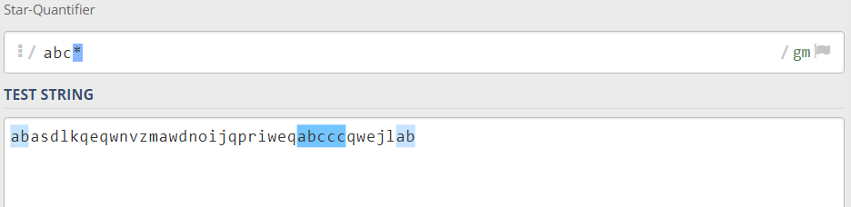اما اگر وجود یک c در این توالی برای شما الزامی است و همچنین میخواهید که هر تعداد c هم در ادامهی a و b، وجود داشته باشد با الگوی خود جداسازی کنید میتوانید از + استفاده کنید:
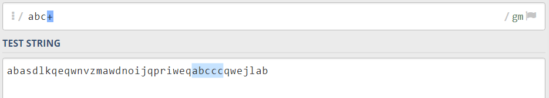اما ممکن است مسئله تغییر کند و بخواهید فقط یک c را جداسازی کنید اما اگر هم وجود نداشت، مسئلهای نیست بنابراین میتوانید از ? بهصورت زیر استفاده کنید:
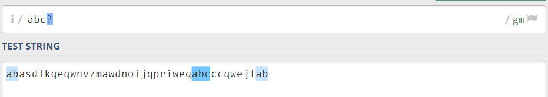حال تصور کنید که الزاما باید حرف c در توالی شما فقط دو بار تکرار شده باشد. Regex برای این مسئله هم چاره اندیشی کرده است و میتوانید با {}، مسئله را بهخوبی حل کنید:
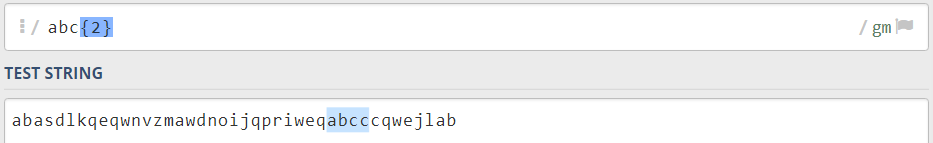یا اگر میخواهید بخشی را جداسازی کنید که دو c یا بیشتر در توالی وجود داشته باشد نیز میتوانید بهصورت زیر عمل کنید:
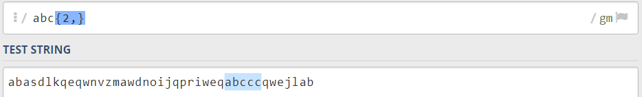یا حتی اگر بخواهید محدودیت ایجاد کنید که در توالی دو الی پنج c وجود داشته باشد، راه حل ساده است:
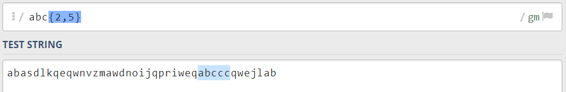همانطور که همه میدانیم همیشه مسئله یکسانی نداریم بنابراین شاید مسئله به گونهای تغییر کند که وجود a در ابتدای توالی اهمیت بسیاری داشته باشد و بخواهیم اگر bc را به هر تعدادی که وجود داشته باشد با همین توالی جداسازی کنیم، از ( ) کمک خواهیم گرفت:
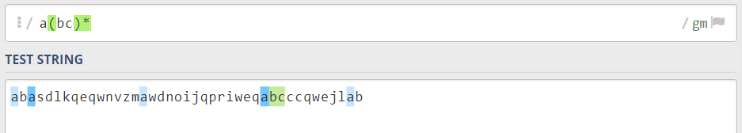یا اگر بخواهیم تعداد توالی bc را محدود کنیم، از بخش قبل استفاده میکنیم و * را با {} جایگزین میکنیم:
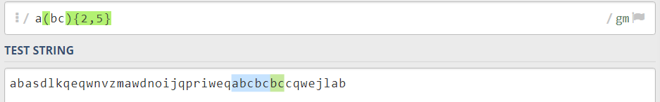حتما توصیه میشود که برای درک هر کدام از این مثالها، آنها را امتحان کنید و به این صورت با مشاهده خروجی هر کدام از کمیت سنجها میتوانید درک بهتری از کاربرد و ادغام آنها داشته باشید.
در این بخش به عملگرهای | و [] میپردازیم که هر دوی آنها عملکردی تقریبا مشابه دارند. اگر بههر صورتی در زبانهای برنامهنویسی با این عملگر کار کرده باشید میتوانید بهخوبی عملکرد آن را درک کنید. رشتهی بهمریختهی بخش قبل را بهخاطر بیاورید و تصویر کنید که حتما میخواهید a را در ابتدای توالی خود داشته باشید اما در ایندکس دوم این توالی فرقی نمیکند که b وجود داشته باشد یا c و فقط میخواهید یکی از آنها پس از حرف a قرار گرفته باشد.
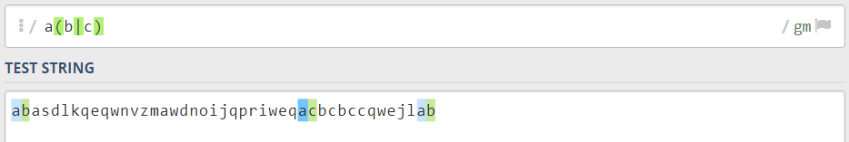توجه داشته باشید که با استفاده از عملگر |، یکی از طرفین عملگر Capture میشود اما اگر میخواهید این اتفاق رخ ندهد میتوانید بهصورت زیر عمل کنید:
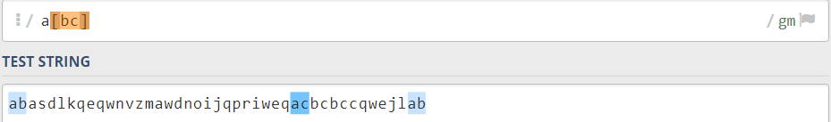مطمئنا Stringهایی که در اختیار شما قرار دارند شامل حروف، اعداد و فاصلهها میشوند. بنابراین باید بتوانیم در الگوهای خود اعداد و فاصلهها را علاوهبر حروف، شناسایی کنیم. برای شناسایی اعداد میتوانیم از \d استفاده کنیم و تمام اعداد استفاده شده در یک String را استخراج کنیم:
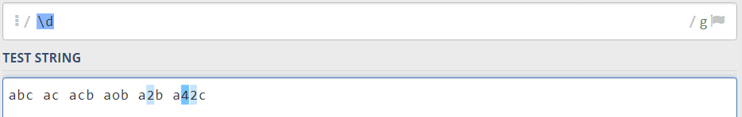همچنین اگر بخواهید _ ها و اعداد ۰ تا ۹ را علاوهبر تمام حروف که a تا z و A تا Z را تشکیل میدهند در String مورد نظر شناسایی کنید کافی است تا از \w استفاده کنید:
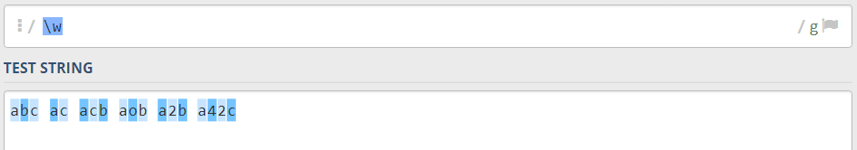حتی شاید بخواهید که فاصلههای میان تمام کاراکترهای موجود در String را حذف یا فقط شناسایی کنید:
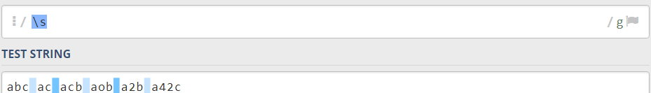و در آخر اگر تصمیم شما بر انتخاب تمام کاراکترهای موجود در String است، با:
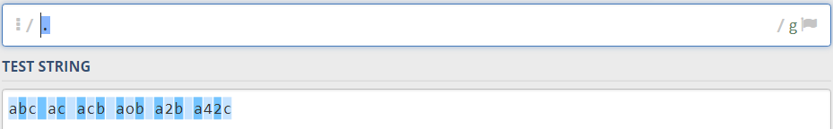تمام کاراکترها توسط Regex شناسایی میشوند و میتوانید عملیات مورد نظر خود را بر روی آنها اعمال کنید.
همچنین باید اضافه کنیم که برخلاف \d، \w و \s نیز Charcater classهای دیگری مانند \W، \D و \S وجود دارند که عملکرد آنها خلاف مثالهایی است که در این بخش زدهایم یعنی زمانی که از \D استفاده میکنیم در واقع میخواهیم کاراکترهای غیر عددی را مشخص کنیم:
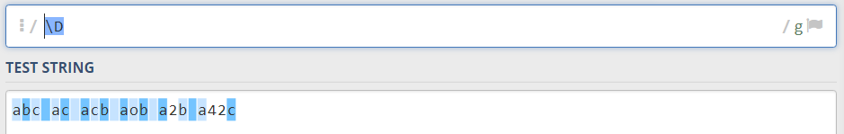البته شاید بخواهید که از کاراکترهای ^.[$()|*+?{\ به شکل اصلی خودشان مانند یک کاراکتر عادی استفاده کنید. خبر بسیار خوب این است که به این موضوع توجه شده اما اگر میخواهید که Regex، این کاراکترها را بهعنوان کاراکترهای عادی شناسایی کند میبایستی از \ قبل از آنها استفاده کنید، برای مثال:
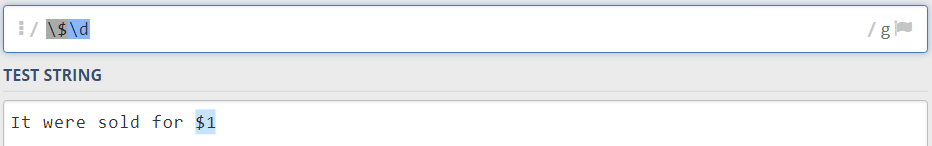اتفاق خوشحال کنندهتر آن است که ما میتوانیم تبها را با \t و خط جدید را با \n شناسایی کنیم.
مفهوم اساسیتری در Regex وجود دارد که آن را با نام Flag میشناسیم و اکثر الگوهایی که در Regex تعریف میکنیم میان دو کاراکتر \S قرار میگیرند.
برای مثال اگر الگوی Regex ما /abc*/ باشد میتوانیم در پایان آن Flag یا Flagهای مورد نظرمان را مشخص کنیم.
g: با اضافه کردن این Flag در انتهای الگوی Regex که با عنوان global از آن یاد میشود، قادر خواهیم بود تا با الگوی خود تمام توالیها را تشخیص دهیم اما بدون استفاده از این Flag تنها با اولین تطبیق، جستجو به پایان میرسد.
i: این Flag بهمنظور insensitive کردن جستجو استفاده میشود یعنی اینکه جستجوی Regex به کوچک یا بزرگ بودن حروف حساس نخواهد بود و برای مثال در زمانی که الگوی abc* را در یک String جستجو میکنید، توالیای مانند AbCc نیز میتواند یکی از نتایج جستجو باشد.
از الگوی a(b|c) قبلتر در مثالها استفاده کرده بودیم اما توضیحی در رابطه با ( ) داده نشده بود. این پرانتزها باعث میشوند تا یک Capturing Group با مقدار b|c در الگوی خود ایجاد کنید که درنهایت نتایج در یک گروه جداگانه قرار داده میشوند. حال برای غیرفعال کردن Capturing Group میتواند از ?: بهصورت زیر استفاده کنید:
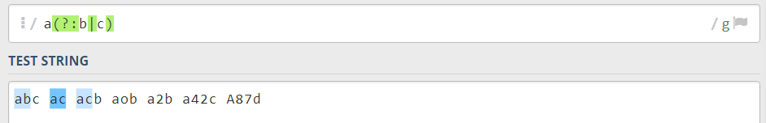البته در صورتی که بخواهید Capturing Group فعال باشد اما نام خاصی برای آن در نظر داشته باشید راه حلی وجود دارد:
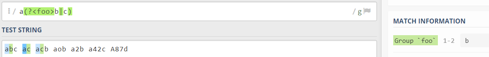با الگوی بالا، foo بهعنوان نام گروه نمایش داده میشود.
این تکنیک میتواند در زمان استخراج دادههای مورد نیازتان با هر کدامیک از زبانهای برنامهنویسی بسیار مفید باشد زیرا میتوانید نتایج مطابقت داده شده را بهصوت یک آرایه دریافت کنید. همچنین با نامگذاری Capturing Groupها قادر خواهید بود که از همان نام بهعنوان Index آرایه استفاده کرده و دادههای مورد نظر خود را از آرایه دریافت کنید.
مطمئنا اگر مقاله را با دقت دنبال کرده باشید، متوجه خواهید شد که در بخش عملگرها از براکتها استفاده کرده بودیم حال در این بخش مفصلتر عملکرد براکتها را شرح میدهیم. با اطلاعات قبلی خود میدانیم که [abc] عملکردی شبیه a|b|c دارد. به این صورت که در String ما تمام حروف a،b و c را بهطور مجزا مشخص میکند.
حال با قرار دادن - میتوانیم یک توالی را در الگوی خود مشخص کنیم، برای مثال:
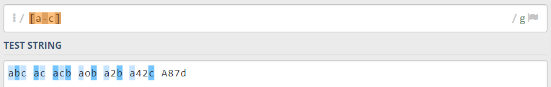از حرف a تا c را در String ما جستجو میکند. یا اگر بهدنبال حروف و اعداد در یک String باشید میتوانید از الگوی زیر استفاده کنید:
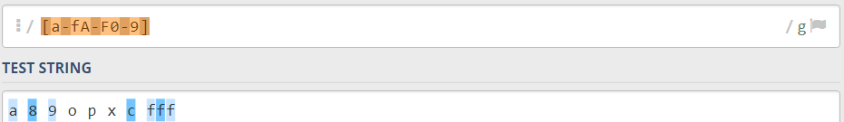همچنین باید اضافه کرد که با استفاده از ^ درون براکتها میتوانید الگوی خود را منفی کنید. مثلا:
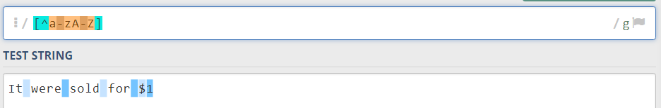هرچیزی به جز حروف و اعداد ۰ تا ۹ را جستجو میکند. توجه داشته باشید که تمام مواردی مانند \$ که قبلتر دربارهشان صحبت کردیم، در براکتها دیگر کاربردی ندارد یا لنگر ^، عملکرد متفاوتی از خود نشان میدهد.